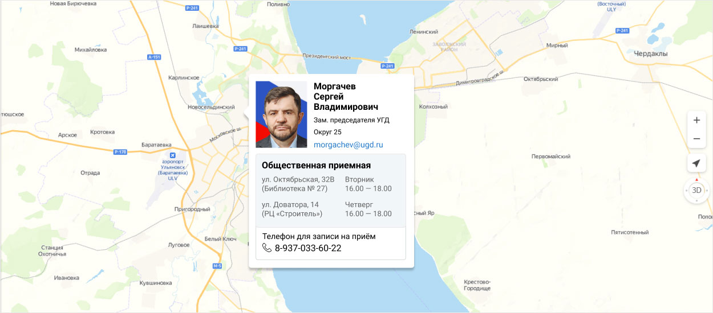
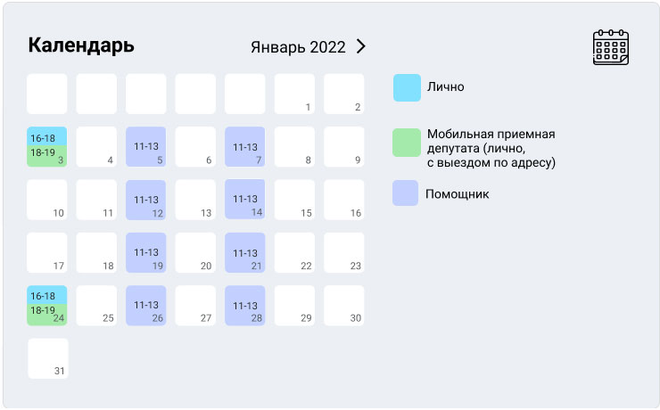

Приемная
Работа с обращениями граждан
Начальник отдела делопроизводства, работы с обращениями граждан и контроля
Аскалонова Анна Геннадьевна
(8422) 27-09-40
Почтовый адрес Ульяновской Городской Думы:
432017, г. Ульяновск, ул. Кузнецова, 7
График приёма избирателей депутатами УГД в общественной приемной
Общественные приемные на карте с графиком работы
или

График приёма избирателей депутатами Ульяновской Городской Думы на январь 2022 года
| № | ФИО | Место приема | Время приема |
| 1 | Фадеев Владимир Владиславович |
Ул. Локомотивная, д.85 тел. 8-9510-97-40-54 |
 |
| 2 | Анохин Константин Евгеньевич |
пр-т Гая, 15 (ДК «Киндяковка») тел. 8-937-033-60-68 |
|
| 3 | Борисов Алексей Владимирович |
пр-т Гая, 15 (ДК «Киндяковка») тел. 8-937-033-60-68 |
|
| 4 | Анохин Константин Евгеньевич |
пр-т Гая, 15 (ДК «Киндяковка») тел. 8-937-033-60-68 |